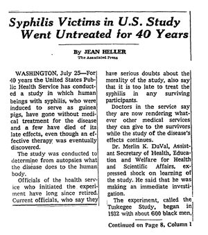
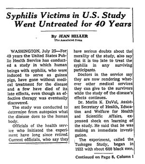

History
The Tuskegee Study of Untreated Syphilis in African American men happened between 1932 and 1972. It consisted of 600 men, who volunteered because they were promised free medical care after the experiment. The disease gave the men severe health problems, some also died, went blind or insane.
The AIDS/HIV found its way into the United States in the 1960s. The first couple of cases with people who had the disease was by gay men in Los Angeles, New York City, and San Francisco. The disease is said to be targeted towards Gay and Bisexual men, African American, and Latinos.
Conspiracy
Many people, specifically Black and Latinx, believe that the sudden appearances of these diseases, which were mostly targeted towards minorities, were created by the government to commit a mass genocide of each group.